The arrange-all functionality is available in Sirius diagram editors in the form of a button and a context menu:
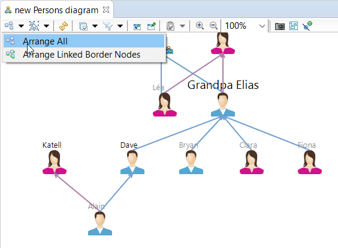
Its effect is to layout the selected diagram elements (or the whole diagram if no elements are selected) based on the layout algorithm defined for the diagram, or using a default, generic algorithm if nothing is specified.
By default, there are two different layout algorithm that can be configured in the VSM for a diagram:
Ordered Tree Layout algorithm: useful to represent elements in a hierarchical way.
Composite Layout algorithm: used to customize specific aspects of the default algorithm, i.e. the general layout orientation and the padding between elements.
If none of these algorithms fit your needs, Sirius provides two extension points
org.eclipse.sirius.diagram.ui.layoutProvider and
org.eclipse.sirius.diagram.ui.viewOrderingProvider as well as an API to ease the writing of your own layout algorithms and their usage in Sirius diagram editors.
This API reuse the GMF “Arrange All” API and augments it with features needed by Sirius layout algorithms like:
GMF provides basic API and implementations to ease the customization of the “Arrange All” mechanism. It also implements a complete algorithm that is based on the graphical elements.
The top level type of this this API is
ILayoutNodeProvider :
This interface is very generic, but GMF provides abstract classes that handle the low-level work while letting you define only the layouting business rules:
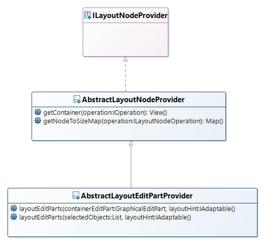This can be done by creating a component inheriting the abstract class
AbstractLayoutEditPartProvider and implementing its methods:
boolean provides(IOperation operation) from
IProvider super interface
Command layoutEditParts(GraphicalEditPart containerEditPart, IAdaptable layoutHint)
Command layoutEditParts(selectedObjectst List, IAdaptable layoutHint)
The
provides operation is meant to return true if the class can arrange the diagram for the specified operation.
The
layoutEditParts operations will return the commands that will actually be in charge of arranging the diagrams' edit parts. The first one takes the main container that is to be arranged while the latter accepts a list of edit parts to arrange.
The implementation of those three methods forms your layout algorithm.
With this API comes an extension point
org.eclipse.gmf.runtime.diagram.ui.layoutProviders. It allows your own
AbstractLayoutEditPart layout algorithm to be used.
When doing layouting with GMF based tools like Sirius you will hear about views and edit parts. It is important to understand what they are.
The views are persisted model elements that when interpreted represent your diagram visually. You have the
Node,
Edge,
Style, etc...
They contain all visual information like the position, the size of the element, its color, etc...
Edit parts ties the model (the views) to a visual representation with a one on one relationship. One edit part points at one view. They are responsible for making changes to the model and interpret and display graphically the view.
The Sirius Layouting API simplifies the writing of a custom layout algorithm by providing different layout providers specific to Sirius context that you can reuse easily in addition of your own layout algorithm if it does not conflict with these.
It also provides utility methods that you can find useful
The Sirius API for layouting Sirius diagrams is the following:
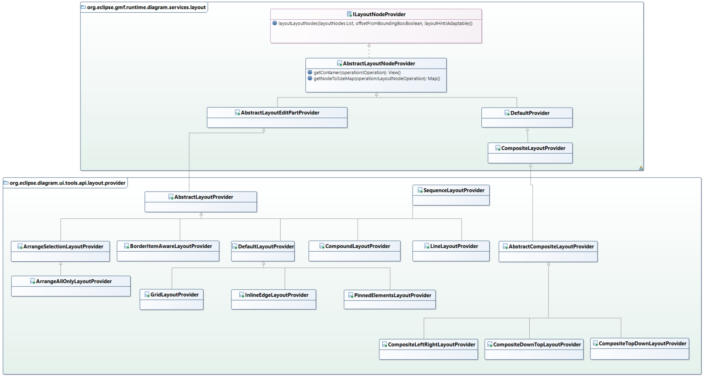
Sirius defines and already uses various different layout providers in different contexts.
Here is a list of all of those with a basic description of each:
It is used by Sirius as entry point to dispatch arrange requests on a Sirius diagram to registered layout providers. The dispatch takes in consideration layout algorithm specified in the VSM and layout providers provided from the Sirius extension point
org.eclipse.sirius.diagram.ui.layoutProvider.
Lays out all views on a single line (either vertical or horizontal).
Lays out all views as a grid.
Lays out connections alongside their source and target nodes (useful on the sequence diagram for example).
This provider only purpose is to delegate arrangement to attached layout provider after having added information about not selected parts in the layout hint.
It is used for example with our composite layout providers to keep fixed the not selected parts and to avoid putting other selected parts on it when layouting.
It is used primary by default provider whenever the arrange-all action is called because the arrangement can be done on a selection and not on all diagram elements.
This provider is used to delegate layouting to attached provider only when an arrange-all is done on a diagram and not an arrange selection.
When used as primary provider, the arrange selection action is not available in the menu of a Sirius editor using this provider.
It is used for example in the
OrderedTreeLayoutProvider where it does not make sense to make a tree of just some elements because the all concept is to have a complete tree representation.
This provider is designed to work with another layout provider. When its attached layout provider has done its layouting part, this provider iterates on all diagram elements that are pinned (should not have its position changes by an automatic layout) to put it back at its original position. In case of visual overlap conflict with a non-pinned element, the non-pinned element is move near the pinned one where no overlap is visible.
This provider allows to compose different layout providers into a compound one. It is useful to reuse some layouting rules that does not conflict with others needed ones.
For example the providers
CompositeDownTopLayoutProvider and
PinnedElementLayoutProvider can be attached to a compound instance. Then those providers are called in their attach order one after another to do their layouting parts. It avoids the composite provider to duplicate code to handle pinned elements.
This provider arranges all the bordered nodes which are connected to one edge. It reduces the path of the edge between each extremity. For example:
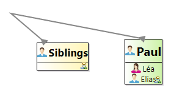Becomes
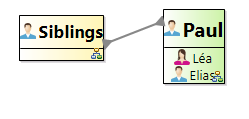The view ordering is an API used by layout algorithms provided by Sirius. It allows to define a sub class of
ViewOrdering that will sort children views of a parent view. The layouting will be done on sorted views instead of the original order in the layout provider.
For example, if I use the
LineLayoutProvider with default view ordering component in a diagram with two elements, views will be aligned in their natural iteration order:
If I define a view ordering component that reorder view in the lexicographic order, views will be aligned accordingly:
This mechanism avoid to rewrite a layout provider if the only thing that should be changed is the order the layout provider lays out its views.
Its architecture is the following:
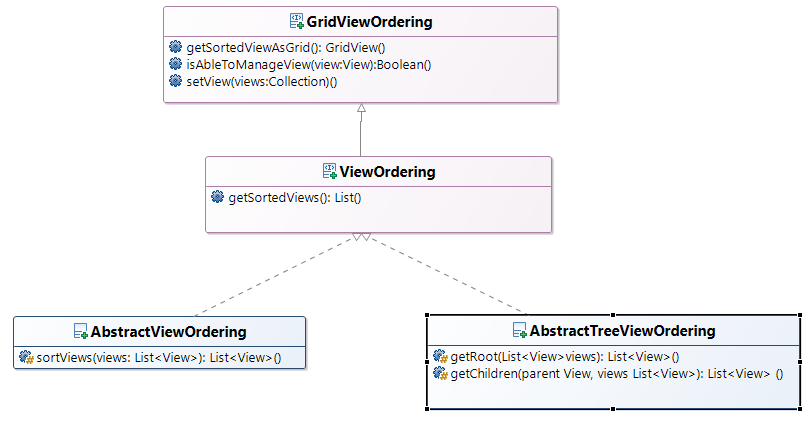Layout providers need to sort view by using the view ordering framework so your view ordering component can be used. The Sirius providers using this framework are the following:
GridLayoutProvider
InlineEdgeLAyoutProvider
LineLAyoutProvider
To contribute a
ViewOrdering that should be used in a Sirius provider, you have to create a sub class of
AbstractViewOrdering or
AbstractViewOrdering or
ViewOrdering if you need to do an ordering different from what Sirius offers with its abstract classes.
Sirius abstract classes offers ordering only on Node views by default.
For example the lexicographic view ordering component would be the following:
public class LexicographicViewOrdering extends AbstractViewOrdering {
@Override
protected List<View> sortViews(List<View> views) {
Comparator<View> comparing = Comparator.comparing(new Function<View, String>() {
@Override
public String apply(View t) {
DDiagramElement element = (DDiagramElement) t.getElement();
return element.getName();
}
});
Collections.sort(views, comparing);
return views;
}
}
Once your view ordering component has been written you have to make Sirius aware of it so it can be used.
To do that Sirius provides an extension point
org.eclipse.sirius.diagram.viewOrderingProvider.
It allows to register a
ViewOrderingProvider that will provide your view ordering component:
It contains the following methods:
-
provides: tell Sirius if your ordering component should be used when layouting views associated to the given mapping.
-
getViewOrdering: tell Sirius what view ordering component to use to order views when the provides method returns true.
For example with the lexicographic you will have:
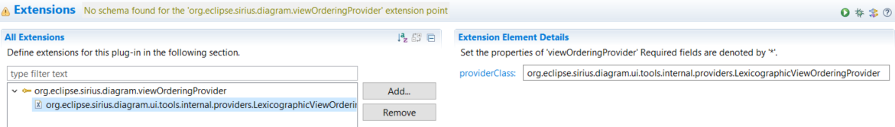<extension point="org.eclipse.sirius.diagram.viewOrderingProvider">
<viewOrderingProvider providerClass="org.eclipse.sirius.diagram.ui.tools.internal.providers.LexicographicViewOrderingProvider" />
</extension>
The
LexicographicViewOrderingProvider code would be:
public class LexicographicViewOrderingProvider implements ViewOrderingProvider {
public LexicographicViewOrderingProvider() {
}
@Override
public boolean provides(DiagramElementMapping mapping) {
return true;
}
@Override
public ViewOrdering getViewOrdering(DiagramElementMapping mapping) {
return new LexicographicViewOrdering();
}
}
To create your own layout algorithm with Sirius API you have to subclass one Sirius abstract class depending on what you need to use:
This provider is the recommended one to use if you don’t need the liberty of composition of others below. If you want to have the capability for specifiers to be able to configure your layout algorithm directly in the VSM you must use this provider.
For example the ELK layout algorithms if installed are using it:
/**
* Layout node provider allowing to apply an ELK layout algorithm while
* arranging diagram elements.
*/
public class ELKLayoutNodeProvider extends DefaultLayoutProvider {
@Override
public Command layoutEditParts(final List selectedObjects, final IAdaptable layoutHint) {
Injector injector = LayoutConnectorsService.getInstance().getInjector(null, selectedObjects);
ElkDiagramLayoutConnector connector = injector.getInstance(ElkDiagramLayoutConnector.class);
LayoutMapping layoutMapping = connector.buildLayoutGraph(null, selectedObjects);
connector.layout(layoutMapping);
connector.transferLayout(layoutMapping);
return connector.getApplyCommand(layoutMapping);
}
}
This class should be extended if you do not need what AbstractLayoutProvider provides.
Its API is:
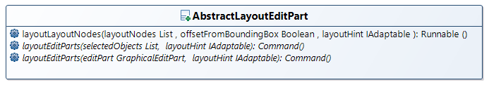
Only the abstract methods
layoutEditParts should be override. It is these methods that do the layouting by providing commands modifying underlying views information.
This class should be extended if your layouting algorithm is meant to be used in addition to others during a same layouting pass and if you need to be aware of the bound changes produced by the other algorithms. It also should be used if you need all the utility methods regarding view bounds manipulation provided by this abstract class.
When sub classing this one, you only have to implement
layoutEditParts(List, IAdaptable) and to override
provides(IOperation) methods.
For example the
LineLayoutProvider have the following code:
public class LineLayoutProvider extends AbstractLayoutProvider {
/** The default padding. */
private static final Insets DEFAULT_PADDING = new Insets(30, 30, 30, 30);
/**
* <code>true</code> if the line is horizontal, <code>false</code> if the line is vertical.
*/
private boolean horizontal = true;
/**
* <code>true</code> if the line is horizontal, <code>false</code> if the line is vertical.
*
* @param horizontal
* <code>true</code> if the line is horizontal, <code>false</code> if the line is vertical.
*/
public void setHorizontal(final boolean horizontal) {
this.horizontal = horizontal;
}
@Override
public Command layoutEditParts(final List selectedObjects, final IAdaptable layoutHint) {
final Iterator<?> iterEditParts = selectedObjects.iterator();
final List<View> views = new ArrayList<View>(selectedObjects.size());
final Map<View, ShapeEditPart> viewsToEditPartMap = new HashMap<View, ShapeEditPart>();
while (iterEditParts.hasNext()) {
final Object next = iterEditParts.next();
if (next instanceof ShapeEditPart && !(next instanceof IBorderItemEditPart)) {
final ShapeEditPart shapeEditPart = (ShapeEditPart) next;
final View view = shapeEditPart.getNotationView();
viewsToEditPartMap.put(view, shapeEditPart);
views.add(view);
} else {
iterEditParts.remove();
}
}
ViewOrdering viewOrdering = ViewOrderingHint.getInstance().consumeViewOrdering(getContainerEditPart(selectedObjects).getNotationView());
if (viewOrdering == null) {
// use a simple view ordering ... too bad.
viewOrdering = new SimpleViewOrdering();
}
viewOrdering.setViews(views);
final List<View> sortedViews = viewOrdering.getSortedViews();
final List<ShapeEditPart> sortedEditParts = new ArrayList<ShapeEditPart>(sortedViews.size());
final Iterator<View> iterSortedViews = sortedViews.listIterator();
while (iterSortedViews.hasNext()) {
final View currentView = iterSortedViews.next();
final ShapeEditPart currentEditPart = viewsToEditPartMap.get(currentView);
sortedEditParts.add(currentEditPart);
}
return createNodeChangeBoundCommands(sortedEditParts);
}
/**
* Create the change bounds commands.
*
* @param sortedNodes
* the nodes to move.
* @return the change bounds command.
*/
protected Command createNodeChangeBoundCommands(final List<ShapeEditPart> sortedNodes) {
final CompoundCommand result = new CompoundCommand();
final Iterator<ShapeEditPart> iterEditParts = sortedNodes.iterator();
int currentX = 0;
while (iterEditParts.hasNext()) {
final ShapeEditPart shapeEditPart = iterEditParts.next();
if (!(shapeEditPart instanceof IBorderItemEditPart)) {
final View view = shapeEditPart.getNotationView();
// the zoom.
double scale = 1.0;
if (shapeEditPart.getRoot() instanceof DiagramRootEditPart) {
final ZoomManager zoomManager = ((DiagramRootEditPart) shapeEditPart.getRoot()).getZoomManager();
scale = zoomManager.getZoom();
}
//
// Compute request data.
final Point ptOldLocation = shapeEditPart.getFigure().getBounds().getLocation();
// shapeEditPart.getFigure().translateToAbsolute(ptOldLocation);
final int locationX = horizontal ? currentX + this.getPadding().left : this.getPadding().left;
final int locationY = horizontal ? this.getPadding().top : currentX + this.getPadding().top;
final Point ptLocation = new Point(locationX, locationY);
final Dimension delta = ptLocation.getDifference(ptOldLocation);
final Object existingRequest = this.findRequest(view, org.eclipse.gef.RequestConstants.REQ_MOVE);
int step = 0;
if (existingRequest == null) {
final ChangeBoundsRequest request = new ChangeBoundsRequest(org.eclipse.gef.RequestConstants.REQ_MOVE);
request.setEditParts(shapeEditPart);
request.setMoveDelta(new PrecisionPoint(delta.width * scale, delta.height * scale));
request.setLocation(new PrecisionPoint(ptLocation.x * scale, ptLocation.y * scale));
step = this.horizontal ? getBounds(shapeEditPart).width : getBounds(shapeEditPart).height;
final Command cmd = this.buildCommandWrapper(request, shapeEditPart);
if (cmd != null && cmd.canExecute()) {
result.add(cmd);
// this.getViewsToChangeBoundsRequest().put(view,
// request);
}
} else if (existingRequest instanceof ChangeBoundsRequest) {
final ChangeBoundsRequest changeBoundsRequest = (ChangeBoundsRequest) existingRequest;
changeBoundsRequest.setMoveDelta(new PrecisionPoint(delta.width * scale, delta.height * scale));
changeBoundsRequest.setLocation(new PrecisionPoint(ptLocation.x * scale, ptLocation.y * scale));
step = this.horizontal ? getBounds(shapeEditPart).width : getBounds(shapeEditPart).height;
}
currentX += horizontal ? step + getPadding().right + getPadding().left : step + this.getPadding().bottom + this.getPadding().top;
// check the size of the container.
EditPart container = shapeEditPart.getParent();
while (container instanceof CompartmentEditPart) {
container = container.getParent();
}
if (container instanceof ShapeEditPart) {
final ShapeEditPart containerEditPart = (ShapeEditPart) container;
// The minimum witdh
final int minWidth = this.horizontal ? ((getPadding().left + getPadding().right) * sortedNodes.size()) + (getNodeMaxWidth(sortedNodes) * sortedNodes.size())
: getPadding().left + getNodeMaxWidth(sortedNodes) + getPadding().right;
// The minimum height
final int minHeight = this.horizontal ? getPadding().top + this.getNodeMaxHeight(sortedNodes) + this.getPadding().bottom
: ((getPadding().top + getPadding().bottom) * sortedNodes.size()) + (this.getNodeMaxHeight(sortedNodes) * sortedNodes.size());
final Dimension minDimension = new Dimension(minWidth, minHeight);
final Dimension difference = minDimension.getShrinked(containerEditPart.getFigure().getBounds().getSize());
if (difference.width > 0 || difference.height > 0) {
final Object existingContainerRequest = this.findRequest(containerEditPart, org.eclipse.gef.RequestConstants.REQ_RESIZE); // ;this.getViewsToChangeBoundsRequest().get(containerEditPart.getNotationView());
createChangeBoundsCommand(result, existingContainerRequest, containerEditPart, difference, scale);
}
}
}
}
return result;
}
private void createChangeBoundsCommand(final CompoundCommand compoundCommand, final Object existingContainerRequest, final ShapeEditPart containerEditPart, final Dimension difference,
final double scale) {
if (existingContainerRequest == null) {
final ChangeBoundsRequest changeBoundsRequest = new ChangeBoundsRequest();
changeBoundsRequest.setEditParts(containerEditPart);
changeBoundsRequest.setResizeDirection(PositionConstants.SOUTH_EAST);
changeBoundsRequest.setSizeDelta(new Dimension((int) (difference.width * scale), (int) (difference.height * scale)));
changeBoundsRequest.setLocation(new Point(0, 0));
changeBoundsRequest.setType(org.eclipse.gef.RequestConstants.REQ_RESIZE);
final Command cmd = this.buildCommandWrapper(changeBoundsRequest, containerEditPart);
if (cmd.canExecute()) {
compoundCommand.add(cmd);
// this.getViewsToChangeBoundsRequest().put(containerEditPart.getNotationView(),
// changeBoundsRequest);
}
} else if (existingContainerRequest instanceof ChangeBoundsRequest) {
final ChangeBoundsRequest changeBoundsRequest = (ChangeBoundsRequest) existingContainerRequest;
changeBoundsRequest.setResizeDirection(PositionConstants.SOUTH_EAST);
changeBoundsRequest.setSizeDelta(new Dimension((int) (difference.width * scale), (int) (difference.height * scale)));
}
}
/**
* Return the maximum width of all nodes (instances of {@link ShapeEditPart} ) that are in the specified list.
*
* @param nodes
* the nodes.
* @return the maximum width of all nodes that are in the specified list.
*/
protected int getNodeMaxWidth(final List<ShapeEditPart> nodes) {
int max = -1;
for (final ShapeEditPart shapeEditPart : nodes) {
final Object existingRequest = this.getViewsToChangeBoundsRequest().get(shapeEditPart.getNotationView());
int width = shapeEditPart.getFigure().getBounds().width;
if (existingRequest instanceof ChangeBoundsRequest) {
width = width + ((ChangeBoundsRequest) existingRequest).getSizeDelta().width;
}
if (width > max) {
max = width;
}
}
return max;
}
/**
* Return the maximum height of all nodes (instances of {@link ShapeEditPart}) that are in the specified list.
*
* @param nodes
* the nodes.
* @return the maximum width of all nodes that are in the specified list.
*/
protected int getNodeMaxHeight(final List<ShapeEditPart> nodes) {
int max = -1;
for (final ShapeEditPart shapeEditPart : nodes) {
final int height = this.getBounds(shapeEditPart).height;
if (height > max) {
max = height;
}
}
return max;
}
@Override
public boolean provides(final IOperation operation) {
final View cview = getContainer(operation);
if (cview == null) {
return false;
}
final IAdaptable layoutHint = ((ILayoutNodeOperation) operation).getLayoutHint();
final String layoutType = layoutHint.getAdapter(String.class);
return LayoutType.DEFAULT.equals(layoutType);
}
/**
* Return the padding to use.
*
* @return the padding to use.
*/
public Insets getPadding() {
return DEFAULT_PADDING;
}
/**
* Get the container edit part of an object list. Currently the function takes only the first object of the list
*
* @param selectedObjects
* the selected object
* @return the container edit part
*/
protected IGraphicalEditPart getContainerEditPart(final List<EditPart> selectedObjects) {
if (selectedObjects != null && !selectedObjects.isEmpty()) {
return (IGraphicalEditPart) (selectedObjects.iterator().next()).getParent();
}
return null;
}
}
If you want to add the capability for other developers to customize the order the views are laid out in your layout algorithm, you have to use the Sirius view ordering API. For example you will have in your
org.eclipse.sirius.diagram.ui.tools.api.layout.provider.LineLayoutProvider.layoutEditParts(List, IAdaptable) method of your layout provider the following code:
ViewOrdering viewOrdering = ViewOrderingHint.getInstance().consumeViewOrdering(getContainerEditPart(selectedObjects).getNotationView());
if (viewOrdering == null) {
//Use the default one that return the same order.
viewOrdering = new SimpleViewOrdering();
}
viewOrdering.setViews(views);
final List<View> sortedViews = viewOrdering.getSortedViews();
with the method
getContainerEditPart that would be :
protected IGraphicalEditPart getContainerEditPart(final List<EditPart> selectedObjects) {
if (selectedObjects != null && !selectedObjects.isEmpty()) {
return (IGraphicalEditPart) (selectedObjects.iterator().next()).getParent();
}
return null;
}
Then you will apply your layout algorithm on those ordered views.
Three extension points are available to provide your custom algorithms.
org.eclipse.gmf.runtime.diagram.ui.layoutProviders is the high level one. It does not contains specificities linked to Sirius API. You will have to handle those on your own.
org.eclipse.sirius.diagram.ui.layoutProvider is the oldest Sirius extension point. It avoids you to handle specificities linked to Sirius API.
org.eclipse.sirius.diagram.ui.customLayoutAlgorithmProvider is the new one used by ELK it avoids you to handle specificities linked to Sirius API. It also allows you to let specifiers configure your layout algorithm directly in the VSM. The layout algorithm from PinnedElementLayoutProvider and BorderedItemAwareLayoutProvider will be applied after your layouting pass. You should use this one if it fits your needs.
This extension point requires a sub class of
CustomLayoutAlgorithmProvider that will provide your layout algorithm(s) as
CustomLayoutAlgorithm based on
DefaultLayoutProvider class.
When provided, Sirius will expose your algorithm in the VSM like for ELK integration:
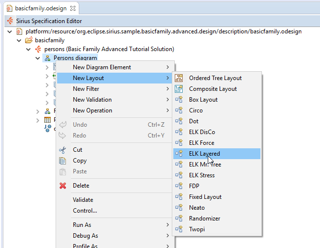The API is the following:
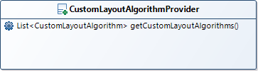This interface contains one method to implement:
List<CustomLayoutAlgorithm> getCustomLayoutAlgorithms() It must returns a
CustomLayoutAlgorithm per layout algorithm you want to provide to the Sirius environment.
Allows you to provide an instance of the layout algorithm to be used by Sirius as well as all the options to configure it and that will be available from the VSM.
The API is the following:
You will have to provide it by using the constructor:
Supplier<DefaultLayoutProvider> that will allow Sirius to instantiate your layout algorithm when needed.
Map<String, LayoutOption> that will contain the options allowing to configure your algorithm and that will be readable by Sirius. To create option you must use the
LayoutOptionFactory described below. Option type supported are the following:
Boolean
Integer
String
Double
Enum
EnumSet
The
LayoutOptionFactory must be used to create an option to give to a
CustomLayoutAlgorithm. This option will be readable by Sirius and offered to VSM specifiers.
LayoutOptionFactory layoutOptionFactory = new LayoutOptionFactory();
This factory contains a method per option type handled. The created option will have:
For example, the ELK integration is the following:
public class ELKAlgorithmProvider implements CustomLayoutAlgorithmProvider {
@Override
public List<CustomLayoutAlgorithm> getCustomLayoutAlgorithms() {
List<CustomLayoutAlgorithm> layoutAlgorithms = new ArrayList<>();
// we fill the Sirius layout algorithm registry with all ELK algorithms.
Collection<LayoutAlgorithmData> algorithmData = LayoutMetaDataService.getInstance().getAlgorithmData();
for (LayoutAlgorithmData layoutAlgorithmData : algorithmData) {
List<LayoutOptionData> optionDatas = LayoutMetaDataService.getInstance().getOptionData(layoutAlgorithmData, Target.PARENTS);
Map<String, LayoutOption> layoutOptions = new HashMap<>();
LayoutOptionFactory layoutOptionFactory = new LayoutOptionFactory();
for (LayoutOptionData layoutOptionData : optionDatas) {
if (!CoreOptions.ALGORITHM.getId().equals(layoutOptionData.getId()) && !layoutOptionData.getVisibility().equals(Visibility.HIDDEN)) {
switch (layoutOptionData.getType()) {
case STRING:
layoutOptions.put(layoutOptionData.getId(), layoutOptionFactory.createStringOption((String) layoutOptionData.getDefault(), layoutOptionData.getId(),
layoutOptionData.getDescription(), layoutOptionData.getName()));
break;
case BOOLEAN:
layoutOptions.put(layoutOptionData.getId(), layoutOptionFactory.createBooleanOption((Boolean) layoutOptionData.getDefault(), layoutOptionData.getId(),
layoutOptionData.getDescription(), layoutOptionData.getName()));
break;
case INT:
layoutOptions.put(layoutOptionData.getId(), layoutOptionFactory.createIntegerOption((Integer) layoutOptionData.getDefault(), layoutOptionData.getId(),
layoutOptionData.getDescription(), layoutOptionData.getName()));
break;
case DOUBLE:
layoutOptions.put(layoutOptionData.getId(), layoutOptionFactory.createDoubleOption((Double) layoutOptionData.getDefault(), layoutOptionData.getId(),
layoutOptionData.getDescription(), layoutOptionData.getName()));
break;
case ENUMSET:
case ENUM:
String[] choices = layoutOptionData.getChoices();
List<EnumChoice> choicesList = new ArrayList<>();
for (int i = 0; i < choices.length; i++) {
String choiceId = choices[i];
choicesList.add(new EnumChoice(choiceId, ""));
}
String defaultValue = null;
Object defaultObject = layoutOptionData.getDefaultDefault();
if (defaultObject instanceof Enum) {
defaultValue = ((Enum<?>) defaultObject).name();
}
if (layoutOptionData.getType() == Type.ENUM) {
layoutOptions.put(layoutOptionData.getId(),
layoutOptionFactory.createEnumOption(choicesList, layoutOptionData.getId(), layoutOptionData.getDescription(), layoutOptionData.getName(), defaultValue));
} else {
layoutOptions.put(layoutOptionData.getId(),
layoutOptionFactory.createEnumSetOption(choicesList, layoutOptionData.getId(), layoutOptionData.getDescription(), layoutOptionData.getName()));
}
break;
default:
break;
}
}
}
layoutAlgorithms.add(new CustomLayoutAlgorithm(layoutAlgorithmData.getId(), layoutAlgorithmData.getName(), () -> new ELKLayoutNodeProvider(), layoutOptions));
}
return layoutAlgorithms;
}
}
This class contains the core layout algorithm. When a user calls an arrange-all on a diagram that will be configured to use your layout algorithm, an instance of this class is created. You will be given the parts to layout. Then it is your job to layout it as you want.
For example, the ELK integration have the following:
public class ELKLayoutNodeProvider extends DefaultLayoutProvider {
@Override
public Command layoutEditParts(final List selectedObjects, final IAdaptable layoutHint) {
Injector injector = LayoutConnectorsService.getInstance().getInjector(null, selectedObjects);
ElkDiagramLayoutConnector connector = injector.getInstance(ElkDiagramLayoutConnector.class);
LayoutMapping layoutMapping = connector.buildLayoutGraph(null, selectedObjects);
connector.layout(layoutMapping);
connector.transferLayout(layoutMapping);
return connector.getApplyCommand(layoutMapping);
}
}
To be used, your custom algorithm should be declared to Sirius with the provided extension point
org.eclipse.sirius.diagram.ui.layoutProvider. This extension point requires a sub class of
LayoutProvider that will provide your layout algorithm. Its API is the following:
The
LayoutProvider interface contains the following methods:
isDiagramLayoutProvider: This method should return true if the provided layout algorithm can handle layouting from root diagram part when this part is layout action’s target. It means your provider will be called with
org.eclipse.gmf.runtime.diagram.ui.services.layout.AbstractLayoutEditPartProvider.layoutEditParts(GraphicalEditPart, IAdaptable) in this case. The call will only be done if your provider inherits from
org.eclipse.sirius.diagram.ui.tools.api.layout.provider.AbstractLayoutProvider. If not or if
isDiagramLayoutProvider returns false, then the method
org.eclipse.sirius.diagram.ui.tools.api.layout.provider.DefaultLayoutProvider.layoutEditParts(List, IAdaptable) is called and will delegate to the method
layoutEditParts(List, IAdaptable) of your provider.
provides: Should return true if your
LayoutProvider do provide a layout algorithm for the view associated to the given edit part and should be used. False otherwise.
getLayoutNodeProvider: Return the layout algorithm component to use to lay out the diagram elements target of the layout action.
For example the left right composite providers is declared as followed:
public class CompositeLeftRightProvider implements LayoutProvider {
/** The delegated GMF provider. */
private AbstractLayoutEditPartProvider layoutNodeProvider;
public AbstractLayoutEditPartProvider getLayoutNodeProvider(final IGraphicalEditPart container) {
if (this.layoutNodeProvider == null) {
final CompoundLayoutProvider clp = new CompoundLayoutProvider();
final CompositeLeftRightLayoutProvider cdtp = new CompositeLeftRightLayoutProvider();
clp.addProvider(cdtp);
clp.addProvider(new PinnedElementsLayoutProvider(cdtp));
if (ENABLE_BORDERED_NODES_ARRANGE_ALL) {
// ArrangeSelectionLayoutProvider wrap all providers to manage
// the selected diagram element on diagram "Arrange all"
AbstractLayoutProvider abstractLayoutProvider = BorderItemAwareLayoutProviderHelper.createBorderItemAwareLayoutProvider(clp);
this.layoutNodeProvider = new ArrangeSelectionLayoutProvider(abstractLayoutProvider);
} else {
this.layoutNodeProvider = new ArrangeSelectionLayoutProvider(clp);
}
}
return this.layoutNodeProvider;
}
public boolean provides(final IGraphicalEditPart container) {
return isInDDiagramWithConfiguredLeftRightLayout(container.getNotationView());
}
private boolean isInDDiagramWithConfiguredLeftRightLayout(final View view) {
final Layout foundLayout = DiagramLayoutCustomization.findLayoutSettings(view);
if (foundLayout instanceof CompositeLayout) {
return ((CompositeLayout) foundLayout).getDirection() == LayoutDirection.LEFT_TO_RIGHT;
}
return false;
}
public boolean isDiagramLayoutProvider() {
return true;
}
}
The layout algorithm provided by this
LayoutProvider will be used if the view to layout is associated to a Sirius mapping contained by a diagram mapping declaring the left right composite provider in the VSM.
After this provider creation, you have to registered it with the extension point:
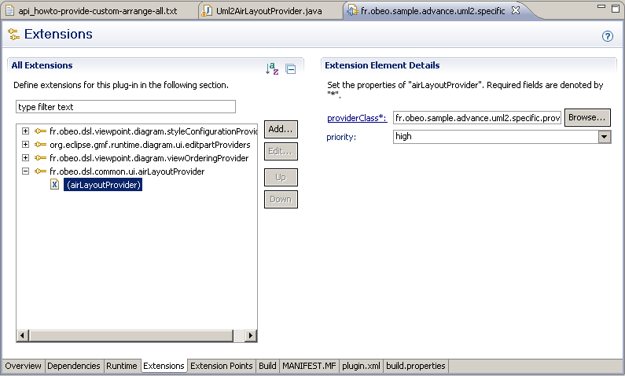
A priority can be set. If two layout providers provide layouting for a same object, the one with the higher priority will be used.
You may want to reuse some of the Sirius layout providers in addition of your own layout provider to avoid code rewrite or duplication if the layouting you are doing does not conflict with the layouting other providers are doing.
To do that, Sirius offers a
CompoundLayoutProvider allowing to trigger layouting of many compatible providers in their insertion order. The compatible providers are:
Also some providers are not compatible with the compound one but instead use a wrapping mechanism. They wrap another provider. Then their layouting code is called before or after the wrapped’s code:
BorderItemAwareLayoutProviderHelper.createBorderItemAwareLayoutProvider(clp);
PinnedElementsLayoutProvider should always do its layouting before BorderItemAwareLayoutProvider but after any other layouting.
BorderItemAwareLayoutProvider should always do its layouting at the end.
To know more about these providers you can read the section
Sirius Layout Providers.
The
CompoundLayoutProvider API is the following:
The
provides and
layoutEditParts methods delegate to registered providers. You should not override those.
You only have to add all the providers that should be used to layout with method
addProvider.
Compound and wrapping providers are used for example by the composite providers that can be used from a VSM declaration:
public AbstractLayoutEditPartProvider getLayoutNodeProvider(final IGraphicalEditPart container) {
if (this.layoutNodeProvider == null) {
final CompoundLayoutProvider clp = new CompoundLayoutProvider();
final CompositeDownTopLayoutProvider cdtp = new CompositeDownTopLayoutProvider();
clp.addProvider(cdtp);
clp.addProvider(new PinnedElementsLayoutProvider(cdtp));
AbstractLayoutProvider abstractLayoutProvider = BorderItemAwareLayoutProviderHelper.createBorderItemAwareLayoutProvider(clp);
this.layoutNodeProvider = new ArrangeSelectionLayoutProvider(abstractLayoutProvider);
}
return this.layoutNodeProvider;
}
We see that this composite provider is composed with the
PinnedElementsLayoutProvider in a compound provider. The composite provider does its layouting first but does not handle pinned elements. The pinned one restore pinned elements to their original position and fix potential overlaps.
Then the compound provider is wrapped in a
BorderItemAwareLayoutProvider that is also wrapped in the
ArrangeSelectionLayoutProvider.
The layout execution flow is the following:
ArrangeSelectionLayoutProvider is called first. Then
CompoundLayoutProvider is called and delegates to
CompositeDownTopLayoutProvider first and
PinnedElementsLayoutProvider second. Lastly
BorderItemAwareLayoutProvider is called.
This extension point provided by GMF can be used to provide your custom layout algorithm in Sirius diagram editors if you don’t need any of the features and implementation ease brought by Sirius API.
To do that, your layout algorithm in the form of an
AbstractLayoutEditPartProvider can be declared in GMF extension point
org.eclipse.gmf.runtime.diagram.ui.layoutProviders.
The priority of the default one used by Sirius is medium. To be override your priority must be lowest than medium.